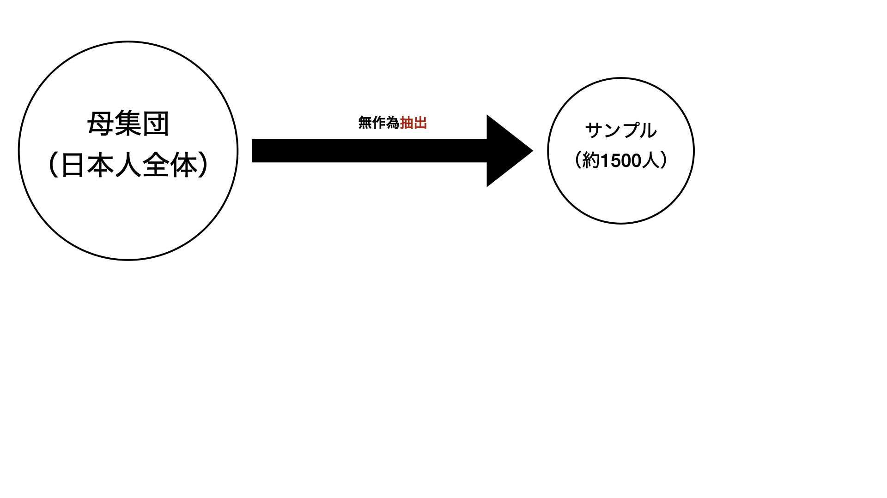
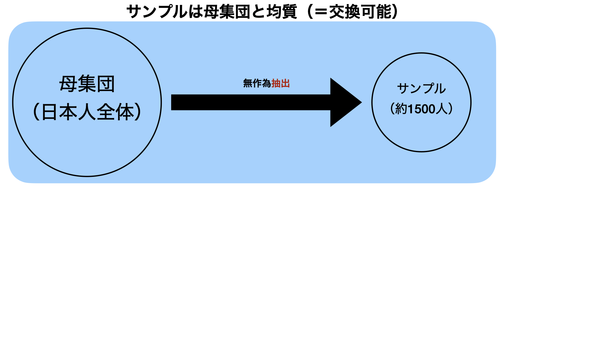
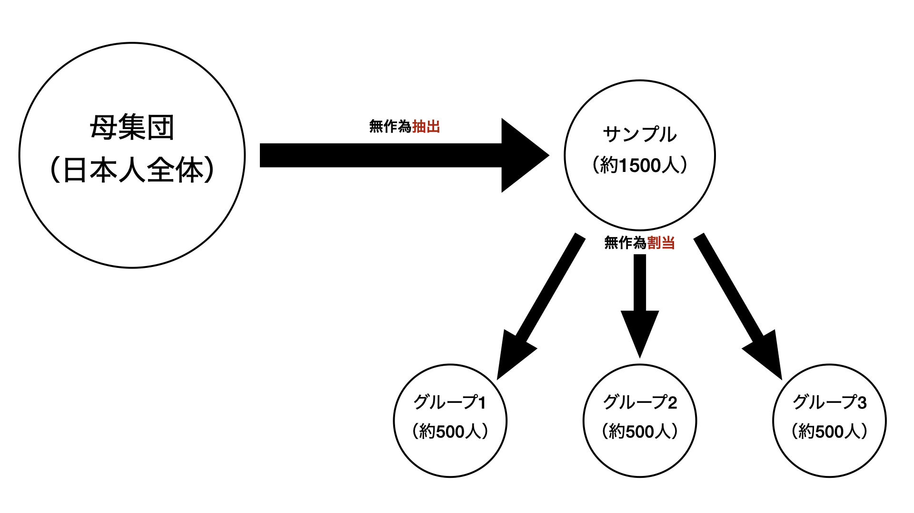
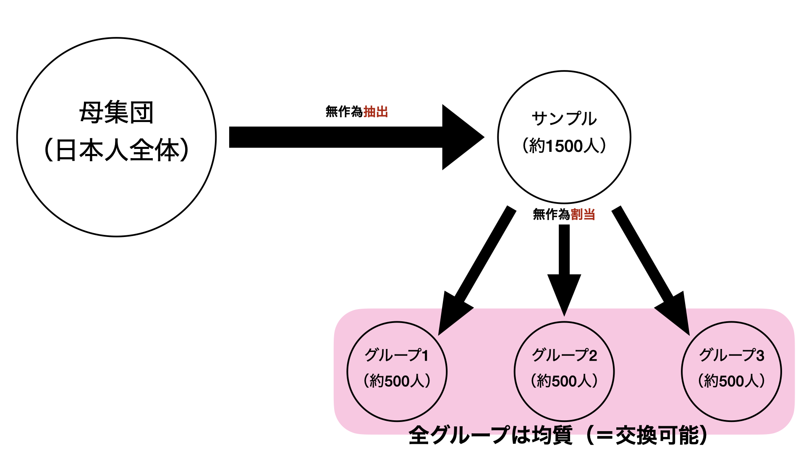
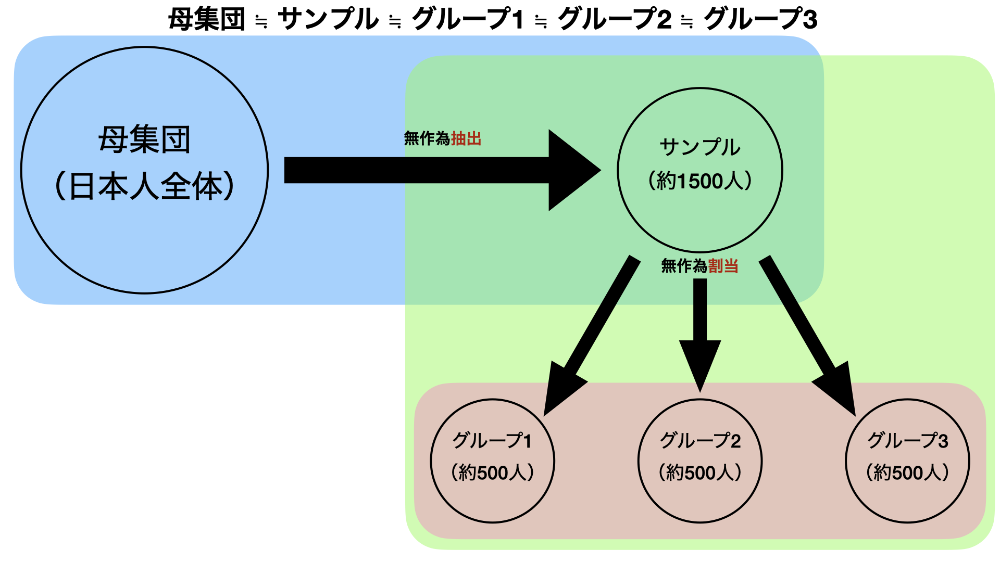
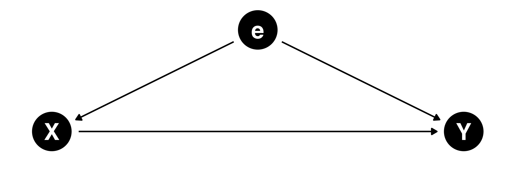

方法論特殊講義III
因果推論の考え方とランダム化比較試験
宋 財泫
関西大学総合情報学部
2023年8月17〜23日
講義概要
講師紹介

- 宋 財泫 (SONG JAEHYUN)
- 専門は政治行動論、選挙研究、政治学方法論
- 趣味はゲームはラーメン屋巡り
- 好きなラーメンは家系と二郎インスパイア、汁なし全般
- 最近やっているゲームはFF XIV
内容
各講義は以下の内容に関する理論と実習を5:5で行う予定。また、履修者の理解・進捗状況に応じて変更の可能性がある。
- 1日目：8月17日（木）
- 因果推論の考え方
- ランダム化比較試験
- 2日目：8月18日（金）
- Lab Session: R の使い方
- 2日目にLab Sessionを行わない場合は、以下の内容を繰り上げ、5日目は操作変数を解説
- 3日目：8月21日（月）
- 回帰分析とマッチング、その応用
- 4日目：8月22日（火）
- 差分の差分法とその応用
- 5日目：8月23日（水）
- 回帰不連続デザイン
実習
実習はRで行う。1・2日目はRの導入および使い方についても解説（復習レベル）する。
- 本講義の分析はExcel, SPSS, Stata, Julia, Pythonなどでも可能
- Jared P. Lander. 2017. R for Everyone: Advanced Analytics and Graphics (2nd Edition), Addison-Wesley Professional.（邦訳有り）
- 宋財泫・矢内勇生.『私たちのR: ベストプラクティスの探究』Web-book
- 無料のR入門書: Rを広く、深く勉強したい人におすすめ
宋のR環境
- macOS 13.5 “Ventura”
- R version 4.3.1 (2023-06-16)
- R > 4.1ならOK
- RStudio 2023.06.0+421
- スライド、サポートページ、実習用資料の執筆環境
- Quarto 1.4.232
- R package {quarto} 1.2

Rの学習資料
計量政治学とR
- 浅野正彦・矢内勇生. 2019『Rによる計量政治学』オーム社.
- 飯田健. 2013.『計量政治分析』共立出版.
- Kosuke Imai. 2017. Quantitative Social Science: An Introduction, Princeton University Press. (邦訳あり[上/下])
R全般
- Wickham, Hadley and Grolemund, Garrett. 2017. R for Data Science: Import, Tidy, Transform, Visualize, and Model Data, O’Reilly. (邦訳あり/原著はインターネットから無料で閲覧可)
- 松村優哉 他. 2021. 『改訂2版 Rユーザのための RStudio[実践] 入門—tidyverseによるモダンな分析フローの世界—』技術評論社.
- Wickham, Hadley. 2019. Advanced R (Second Edition), O’Reilly. (邦訳あり/原著はインターネットから無料で閲覧可)
Discordについて
- Discordに登録し、Discordを起動する（アプリ版、Web版、どちらでも良い）。
- 宋をフレンドとして追加
- 宋のIDとタグはjaysong
- 自分の学籍番号と氏名をDiscordメッセージで伝える。
- 宋からの招待が届けば、サーバーに登録する。
- Discord上の表示名（ニックネーム）は宋が実名へ変更する。任意の表示名に変更しないこと。
評価
平常点と期末レポート
- 平常点: 30%
- 授業への参加度 (質問/発言)
- Discordでの参加度も含む
- 期末レポート: 70%
- 提出方法、期限は講義最終日に告知
レポート
研究のプロポーザル
- 本講義で紹介した手法を用いた分析のプロポーザルを作成
- 実現可能性（予算、倫理など）があること
- 架空の予算は100万円を上限とする
- 提出期限は8月31日（木）13時（締切厳守!）
- 分量の制限（下限/上限）なし
前提知識
統計学
自分で計算できなくても、結果の読み方が分かるレベル
- 仮説検定
- 統計的有意性検定
- 回帰分析
R
- データクリーニング、回帰分析、可視化などができるならベスト
- 2日目にRの解説は行うが、深入りはしない（できない）
- https://www.jaysong.net/micro-book/ \(\leftarrow\) 全員がこの資料レベルの内容を知っていれば2日目の内容を省略し、代わりに操作変数法について解説
- 『私たちのR』を読もう！
因果推論とその敵
社会科学における因果推論の意味
Morgan and Winship (2014) Counterfactuals and Causal Inference: Methods And Principles For Social Research. Cambridge.
More has been learned about causal inference in the last few decades than sum total of everything that had been learned about it in all prior recorded history. (Gary King)
相関から因果へ
原因（\(X\)）と結果（\(Y\)）の関係
年齢（世代）と投票率の関係（架空の例）
- 年齢が上がると高い投票率
- 相関関係
- 統計分析から得られる結果は相関関係のみ
- 理論/デザインを用いて相関関係が因果関係であることを説得
- 相関関係→因果関係における障害物
- Selection Bias
- Simultaneity
- Spurious Correlation
- Reverse Causality
- Omitted Variable Biasなど
同時性
Simultaneity

原因と結果の間に双方向の因果関係が存在
- 例) お酒 (原因; X) とストレス (結果; Y) の関係
- 酒を飲むとストレスが貯まる
- ストレス解消のために酒を飲む
- 酒を飲むとストレスが貯まる
- ストレス解消のために酒を飲む
- 酒を飲むとストレスが貯まる
- …
- \(\rightarrow\) 地獄のような無限ループ
\(\Rightarrow\) 酒がストレスに与える影響は?
見かけ上の相関
Spurious Correlation、擬似相関
- たまたま相関関係がある場合
- 例) メイン州の離婚率一人当たりマーガリンの消費量

見かけ上の相関
Spurious Correlation、擬似相関
- 共通の要因からの影響
- 例) ビール消費量とアイスクリーム消費量

見かけ上の相関
Spurious Correlation、擬似相関
- 共通の要因からの影響
- 例) ゲームをやると身長が伸びる説

逆の因果
Reverse Causality
- 例) 心臓移植と生存率の例
| 5年後に死亡 | 5年後に生存 | ||
|---|---|---|---|
| 心臓移植を | 受けた | 10名 | 5名 |
| 受けなかった | 5名 | 10名 |
- 心臓移植を受けたら死亡確率が上がる?
- 死亡確率が高い人が心臓移植を受ける?
逆の因果
Reverse Causality
- 「人気だから4文字に略されるのか、4文字に略せるからヒットす るのか、どっちなんでしょうね」

欠落変数バイアス
Omitted Variable Bias
例) 真のモデルが\(Y = \beta_0 + \beta_1 \cdot X + \beta_2 \cdot Z + e\)の場合
- モデルに\(Z\)が含まれていなくても\(\beta_1\)の推定値は変化\(\times\)
- \(X\)と\(Z\)は独立（\(X \perp Z\)）
- =\(X\)と\(Z\)の共分散が0（\(\sigma_{X, Z} = 0\)）
欠落変数バイアス
Omitted Variable Bias
例) 真のモデルが\(Y = \beta_0 + \beta_1 \cdot X + \beta_2 \cdot Z + e\)の場合
- モデルに\(Z\)が含まれていない場合、\(\beta_1\)の推定値にバイアス
- \(Z \rightarrow X\)の関係が存在
- \(\sigma_{X, Z} \neq 0\)
- \(\beta_1\)の真の値（=不偏推定量）を推定するためには\(X\)と\(Y\)両方と相関する変数すべてが必要
- そもそも、「真の値」とは？
- \(X\)と\(Y\)両方と相関するすべての変数は特定可能? 測定可能?
- \(\rightarrow\) データ分析から得られた結果はあくまでも「分析モデルが想定している世界」のものに過ぎない
- 定量的手法は反証可能性を高めやすい手法（=科学的な手法になりやすい）であって、科学そのものを保障するものでもなく、得られた結果が真理であることを保障するものでもない。
自己選択バイアス
(Self-)Selection Bias
- 例1) 職業訓練と期待収入
| 3年後の収入 | ||
|---|---|---|
| 職業訓練を | 受けた | 6349ドル |
| 受けなかった | 6984ドル |
- 職業訓練を受けたら収入が上がる?
- もともと低収入の人が職業訓練を受けようとする?
- 参考) 心臓移植の例も自己選択のバイアスとして解釈可能
- 参考) 交絡因子の不在として解釈可能（就労意欲など）
内生性
これまでの多くの例は内生性（endogeneity）の問題
- 内生性: 説明変数と誤差項間に相関が存在
- 誤差項と相関のある説明変数: 内生変数（endogenous variable）
- 内生性がある場合、推定値は一致推定量でも、不偏推定量でもはない
- サンプルサイズ（\(N\)）をいくら増やしても無駄
- 内生性の原因
- 同時性
- 欠落変数バイアス
- 測定誤差
- 自己選択バイアス
- 最近の教科書はこれはすべてを自己選択バイアスや欠落変数バイアスでまとめる傾向
相関から因果へ
内生性の除外 \(\rightarrow\) 因果効果の推定


因果推論の根本問題
因果関係の例
ソンさんの講義を履修することで期待年収が上がるか
- 藤村君の場合: ソンさんの講義を履修し、年収が5000万円に
- ソンさんの授業のおかげで富裕層になった（次は社交界進出）
- 友達に教えてあげよう
講義履修の効果
- 処置: ソンさんの講義を履修するか否か
- 効果: 履修した場合の年収 − 履修しなかった場合の年収
因果関係の例
ソンさんの講義を履修することで期待年収が上がるか
- 藤村君の場合: ソンさんの講義を履修し、年収が5000万円に
- ソンさんの授業のおかげで富裕層になった（次は社交界進出）
- 友達に教えてあげよう
講義履修の効果（ケース1）
- 藤村君がソンさんの授業を履修しなくても年収5000万円なら
- ソンさんの講義の因果効果は0
| 履修しなかった場合の年収(A) | 履修した場合の年収(B) | 効果(B-A) | |
|---|---|---|---|
| ケース1 | 5000万 | 5000万 | 0万 |
因果関係の例
ソンさんの講義を履修することで期待年収が上がるか
- 藤村君の場合: ソンさんの講義を履修し、年収が5000万円に
- ソンさんの授業のおかげで富裕層になった（次は社交界進出）
- 友達に教えてあげよう
講義履修の効果（ケース2）
- 藤村君がソンさんの授業を履修しなかった場合、年収1000万円なら
- ソンさんの講義の因果効果は4000万円
- 一生ソンさんには頭が上がらない
| 履修しなかった場合の年収(A) | 履修した場合の年収(B) | 効果(B-A) | |
|---|---|---|---|
| ケース2 | 1000万 | 5000万 | 4000万 |
因果関係の例
ソンさんの講義を履修することで期待年収が上がるか
- 藤村君の場合: ソンさんの講義を履修し、年収が5000万円に
- ソンさんの授業のおかげで富裕層になった（次は社交界進出）
- 友達に教えてあげよう
講義履修の効果（ケース3）
- 藤村君がソンさんの授業を履修しなかった場合、年収8000万円なら
- ソンさんの講義の因果効果は-3000万
- ソンさんは悪くない
| 履修しなかった場合の年収(A) | 履修した場合の年収(B) | 効果(B-A) | |
|---|---|---|---|
| ケース3 | 8000万 | 5000万 | -3000万 |
因果関係の例
ソンさんの講義を履修することで期待年収が上がるか
- 藤村君の場合: ソンさんの講義を履修し、年収が5000万円に
- ソンさんの授業のおかげで富裕層になった（次は社交界進出）
- 友達に教えてあげよう
講義履修の効果
- ソンさんの講義を履修しなかった場合の藤村君の年収は…?
- 個人（藤村君）における処置効果を推定する際にはこれが不可欠
| 履修しなかった場合の年収(A) | 履修した場合の年収(B) | 効果(B-A) | |
|---|---|---|---|
| ケース1 | 5000万 | 5000万 | 0万 |
| ケース2 | 1000万 | 5000万 | 4000万 |
| ケース3 | 8000万 | 5000万 | -3000万 |
潜在的結果枠組み
Neyman-Rubin-HollandのPotential Outcome Framework
- \(i\) : 学生ID ( \(i = 1,2,3,...,N\) )
- \(T\) : 処置
- 学生 \(i\) が謎の薬を飲んだ ( \(T_i = 1\) )
- 学生 \(i\) が謎の薬を飲まなかった ( \(T_i = 0\) )
- \(Y_i(T_i = 1)\) : 学生 \(i\) が謎の薬を飲んだ場合の数学成績
- \(Y_i(T_i = 0)\) : 学生 \(i\) が謎の薬を飲まなかった場合の数学成績
- \(ITE_i = Y_i(T_i = 1) − Y_i(T_i = 0)\) : 学生iにおける薬の処置効果
- ITE: Individual Treatment Effect (個人における処置効果)
- = UTE: Unit Treatment Effect
- 全く同じ個人において薬を飲んだ場合と飲まなかった場合の数学成績の差 = 謎の薬の因果効果
- ITE: Individual Treatment Effect (個人における処置効果)
薬の効果は?
ITEの平均値は−4であり、個人差はあるものの、全体的に薬は成績に負の影響
| \(i\) | \(T_i\) | \(Y_i(T_i = 0)\) | \(Y_i(T_i = 1)\) | \(ITE_i\) |
|---|---|---|---|---|
| 1 | 1 | 77 | 85 | 8 |
| 2 | 1 | 49 | 59 | 10 |
| 3 | 1 | 60 | 66 | 6 |
| 4 | 0 | 61 | 44 | -17 |
| 5 | 0 | 50 | 39 | -11 |
| 6 | 0 | 75 | 55 | -20 |
| 平均 | 62 | 58 | -4 |
因果推論の根本問題
しかし、観察できるのは\(Y_i(T_i = 1)\)か\(Y_i(T_i = 0)\)、片方のみ
- \(Y_i(T_i = 0)\)は反実仮想（counterfactual）であり、観察不可 (\(i \in \{1,2,3\}\))
- \(Y_i(T_i = 1)\)も反実仮想(\(i \in \{4,5,6\}\))
| \(i\) | \(T_i\) | \(Y_i(T_i = 0)\) | \(Y_i(T_i = 1)\) | \(ITE_i\) |
|---|---|---|---|---|
| 1 | 1 | ? | 85 | ? |
| 2 | 1 | ? | 59 | ? |
| 3 | 1 | ? | 66 | ? |
| 4 | 0 | 61 | ? | ? |
| 5 | 0 | 50 | ? | ? |
| 6 | 0 | 75 | ? | ? |
| 平均 | 62 | 70 | 8 |
世界一受けたいソンさんの授業
履修者5名と非履修者5名の年収の比較
- ITEは分からないが、平均値の差分を見ると、+100万円の効果
| \(i\) | \(T_i\) | \(Y_i(T_i = 0)\) | \(Y_i(T_i = 1)\) | \(ITE_i\) |
|---|---|---|---|---|
| 1 | 1 | ? | 700 | ? |
| 2 | 1 | ? | 1000 | ? |
| 3 | 1 | ? | 550 | ? |
| 4 | 1 | ? | 350 | ? |
| 5 | 1 | ? | 400 | ? |
| 6 | 0 | 400 | ? | ? |
| 7 | 0 | 500 | ? | ? |
| 8 | 0 | 350 | ? | ? |
| 9 | 0 | 750 | ? | ? |
| 10 | 0 | 500 | ? | ? |
| 平均 | 500 | 600 | 100 |
世界一受けたいソンさんの授業
履修者5名と非履修者5名の年収の比較（ケース1）
- ITEは分からないが、平均値の差分を見ると、+100万円の効果
- 80万円の価値があるソンさんの講義、みんなで履修しよう!
| \(i\) | \(T_i\) | \(Y_i(T_i = 0)\) | \(Y_i(T_i = 1)\) | \(ITE_i\) |
|---|---|---|---|---|
| 1 | 1 | 550 | 700 | 150 |
| 2 | 1 | 650 | 1000 | 350 |
| 3 | 1 | 600 | 550 | -50 |
| 4 | 1 | 300 | 350 | 50 |
| 5 | 1 | 300 | 400 | 100 |
| 6 | 0 | 400 | 300 | -100 |
| 7 | 0 | 500 | 700 | 200 |
| 8 | 0 | 350 | 600 | 250 |
| 9 | 0 | 750 | 700 | -50 |
| 10 | 0 | 500 | 400 | -100 |
| 平均 | 490 | 570 | 80 |
世界一受けたいソンさんの授業
履修者5名と非履修者5名の年収の比較（ケース2）
- ITEは分からないが、平均値の差分を見ると、+100万円の効果
- ソンさんは悪くない
| \(i\) | \(T_i\) | \(Y_i(T_i = 0)\) | \(Y_i(T_i = 1)\) | \(ITE_i\) |
|---|---|---|---|---|
| 1 | 1 | 800 | 700 | -100 |
| 2 | 1 | 650 | 1000 | 350 |
| 3 | 1 | 600 | 550 | -50 |
| 4 | 1 | 400 | 350 | -50 |
| 5 | 1 | 350 | 400 | 50 |
| 6 | 0 | 400 | 300 | -100 |
| 7 | 0 | 500 | 500 | 0 |
| 8 | 0 | 350 | 400 | 50 |
| 9 | 0 | 750 | 500 | -250 |
| 10 | 0 | 500 | 400 | -100 |
| 平均 | 530 | 510 | -20 |
因果推論の根本問題
- \(Y_i(T_i = 1)\)か\(Y_i(T_i = 0)\)、片方のみしか観察できない状態においてITEから因果効果を推定することは不可能
- 因果推論の根本問題 (The Fundamental Problem of Causal Inference)
- 解決方法
- もう一回、過去に戻って異なる処置を行う

因果推論の根本問題
- \(Y_i(T_i = 1)\)か\(Y_i(T_i = 0)\)、片方のみしか観察できない状態において、ITEから因果効果を推定することは不可能
- ただし、ドラえもんが存在する世界線を除く
- 因果推論の根本問題 (The Fundamental Problem of Causal Inference)
- 潜在的結果を直接観察する方法
- ただし、個々人の潜在的結果ではなく、集団における潜在的結果
- 平均処置効果 (ATE; Average Treatment Effect)
- 平均値の差分から平均的な因果効果を推定
- しかし、…
- 無作為割当の重要性
平均取るだけでOK?
観察されたデータから差分を計算するだけではATEは推定不可能
| \(i\) | \(T_i\) | \(Y_i(T_i = 0)\) | \(Y_i(T_i = 1)\) | \(ITE_i\) |
|---|---|---|---|---|
| 1 | 1 | ? | 700 | ? |
| 2 | 1 | ? | 1000 | ? |
| 3 | 1 | ? | 550 | ? |
| 4 | 1 | ? | 350 | ? |
| 5 | 1 | ? | 400 | ? |
| 6 | 0 | 400 | ? | ? |
| 7 | 0 | 500 | ? | ? |
| 8 | 0 | 350 | ? | ? |
| 9 | 0 | 750 | ? | ? |
| 10 | 0 | 500 | ? | ? |
| 平均 | 500 | 600 | 100 |
信頼できるATEの条件
ATE 推定値の信頼性を損なう敵: 内生性（しかも、常に存在する）
例) やる気のある学生だけがソンさんの講義を履修した場合
- 自己選択バイアス
- ソンさんの講義は鬼畜すぎるため、やる気満々の学生には役に立つものの、やる気のない学生にとってはむしろ学習意欲が低下
- 疑似相関
- やる気のある学生はいろんな方面で頑張るから、将来年収が高くなる。
- 測定誤差
- 履修者の年収がジンバブエ・ドルで測定されている可能性も（これはないか）
内生性は因果推論の敵! どうすれば…?
\(\downarrow\)
無作為割当 (Random Assignment)無作為割当とは
無作為割当 (Random Assignment)
- 処置を受けるかどうかを無作為に割り当てる方法
- 完全無作為割当: 全ての被験者において、どのグループに属するかの確率が等しい
- \(Pr(T_i = 1) = Pr(T_j = 1) \text{ where } i \neq j\)
- \(Pr(T_i = 0) = Pr(T_j = 0) \text{ where } i \neq j\)
- 無作為割当の方法は色々
- 無作為に割り当てると、処置を受けないグループと処置を受けるグループは「集団」として同質なグループになる。
- 受けないグループ: 統制群 (Control Group)
- 受けるグループ: 処置群 (Treatment Group)
- 一つの集団を一人の個人として扱い、ITEを測定 ⇒ ATE
無作為割当の力
コインを投げ、表( \(H\) )なら統制群、裏( \(T\) )なら処置群に割当
- 女性比率が55%、平均年齢が38歳の集団の例
| ID | Female | Age | ID | Female | Age | |
|---|---|---|---|---|---|---|
| 1 | 1 | 31 | 11 | 0 | 38 | |
| 2 | 1 | 41 | 12 | 1 | 29 | |
| 3 | 0 | 31 | 13 | 0 | 21 | |
| 4 | 1 | 46 | 14 | 0 | 26 | |
| 5 | 1 | 37 | 15 | 1 | 36 | |
| 6 | 1 | 37 | 16 | 1 | 40 | |
| 7 | 0 | 30 | 17 | 0 | 50 | |
| 8 | 1 | 46 | 18 | 0 | 42 | |
| 9 | 1 | 56 | 19 | 0 | 29 | |
| 10 | 0 | 47 | 20 | 1 | 47 |
無作為割当の力
コイン投げの結果
| ID | Female | Age | Coin | ID | Female | Age | Coin | |
|---|---|---|---|---|---|---|---|---|
| 1 | 1 | 31 | H | 11 | 0 | 38 | H | |
| 2 | 1 | 41 | T | 12 | 1 | 29 | T | |
| 3 | 0 | 31 | T | 13 | 0 | 21 | H | |
| 4 | 1 | 46 | T | 14 | 0 | 26 | T | |
| 5 | 1 | 37 | H | 15 | 1 | 36 | H | |
| 6 | 1 | 37 | H | 16 | 1 | 40 | T | |
| 7 | 0 | 30 | H | 17 | 0 | 50 | T | |
| 8 | 1 | 46 | T | 18 | 0 | 42 | T | |
| 9 | 1 | 56 | H | 19 | 0 | 29 | H | |
| 10 | 0 | 47 | H | 20 | 1 | 47 | H |
無作為割当の力
統制群と処置群が比較的同質的なグループに
- 統制群（11名）: 女性比率が54.5%、平均年齢が37.2歳
- 処置群 (9名): 女性比率が55.6%、平均年齢が39歳
無作為割当の力
集団として処置群と統制群は、母集団とほぼ同質
- 母集団:女性率が55%、平均年齢が38歳
- 統制群:女性率が54.5%、平均年齢が37.2歳
- 処置群:女性率が55.6%、平均年齢が39歳
- \(n \rightarrow \infty\) なら2つのグループはより同質的に（大数の弱法則）
- 統制群と処置群、母集団はそれぞれ交換可能 (exchangeable)
- 処置群に処置を与えること = 母集団全体に処置を与えること
- 統制群に処置を与えないこと = 母集団全体に処置を与えないこと
- 統制群と処置群の比較で集団を一つの単位としたITE (= ATE)が推定可能
- 処置を与えた母集団 vs. 処置を与えなかった母集団
無作為割当の力
無作為割当は均質な複数のグループを作る手法
- 講義履修と年収の例だと、無作為割当をすることによって …
- 各グループにやる気のある学生とない学生が均等に
- 自己選択バイアス、擬似相関の除去
- ジンバブエ・ドルで測定される学生も均等に（これはないか）
- 測定誤差の除去
- 各グループにやる気のある学生とない学生が均等に
- 内生性:処置変数（講義の履修）と誤差項（やる気など）間の相関
- コイン投げの結果は被験者（学生）の性質と無関係に行われるため、誤差項と相関がない。
- 外生変数 (Exogenous variable)
- 学生の性質 (X) と処置有無 (T) は独立している ⇒ \(X \perp T\)
無作為抽出と無作為割当
- 無作為抽出によってサンプル（標本）と母集団が交換可能（実はここが難しい）
- 無作為割当によって各グループとサンプルに交換可能（=各グループ間で交換可能）
- 無作為抽出&無作為割当によって各グループと母集団が交換可能（グループへの刺激=母集団への刺激）






ランダム化比較試験
ランダム化比較試験とは
Randomized Controlled Trial (RCT)
- 無作為割当で複数のグループを作り上げた上で、異なる刺激・処置を与え、結果を観察する手法
- 社会科学でいう「実験」の多くはこれを指す
- 因果推論の王道
- 因果効果をもたらす(と想定される)処置変数が外生的
- グループ間における結果変数の差 = 因果効果
- データ生成過程(Data Generating Process; DGP)への直接介入
- 「真のモデル」が分かる
実験の方法
- フィールド実験
- 実験室実験
- サーベイ実験
- SONG Jaehyun・秦正樹. 2020. 「オンライン・サーベイ実験の方法: 理論編」『理論と方法』35 (1): 92-108.
- 秦正樹・SONG Jaehyun. 2020. 「オンライン・サーベイ実験の方法: 実践編」『理論と方法』35 (1): 109-127.
データ生成過程への介入
以下のデータ生成過程を仮定
\[ \text{Income} = \beta_0 + \beta_1 \cdot \text{Quant} + \varepsilon \]
- Income: 10年後の年収 (\(\in [0, \infty)\))
- Quant:ソンさんの講義を履修したか否か (\(\in \{0, 1\})\) )
- 誤差項(\(\varepsilon\))には「やる気」や「真面目さ」が含まれるため、Quantと相関がある (\(\rightarrow\) 内生性)
- 無作為割当で受講有無を決めると、「やる気」や「真面目さ」はQunatと無関係 (独立) になる
- 例) 受講有無をコイン投げ（W）で決める場合、コインの結果は誤差項（やる気や真面目さ）と独立（ただし、全員がコイン投げの結果に従うと仮定）
- \(\Rightarrow\) 内生性がなくなる!

RCTの例
Bertand and Mullainathan (2004)
- 労働市場における人種差別
- 約5000人分の架空の履歴書を求人中の会社へ送る
- 履歴書の内容 (性別、人種、能力など) は完全無作為
- 履歴書に人種は記入できないため、白人っぽい名前 (Emily など)、黒人っぽい名前 (Jamal など) を記入
- 後は、返事を待つだけ
処置変数: 人種 ( \(\in \{\text{black}, \text{white}\}\) )
結果変数: 連絡の有無 ( \(\in \{0, 1\}\) )
内生性の可能性
- 誤差項 (\(\varepsilon\)) には教育水準、親の所得、居住地などが含まれる可能性
- 実際に人種と上記の要因には相関あり
- 人種 (処置) と誤差項 (\(\varepsilon\)) 間の相関関係 \(\rightarrow\) 内生性
- 黒人が採用されなかった場合 …
- 黒人だから? \(\leftarrow\) 人種差別\(\bigcirc\)
- 教育水準が低いから \(\leftarrow\) 人種差別\(\times\)
\(\Rightarrow\) 内生性がある限り、因果効果の識別は困難
\(\Rightarrow\) ケースによって政策的含意が変わる。
RCTの力
| 白人の名前 | 黒人の名前 | |
|---|---|---|
| Female | 76.42% | 77.45% |
| HighQuality | 50.23% | 50.23% |
| Call Rate | 9.65% | 6.45% |
| 計 (人) | 2435 | 2435 |
- 無作為割当の結果、人種と性別・能力の相関がほぼ0に
- 内生性のない状態
- この場合、労働市場における人種の因果効果は
- ATE = 黒人の平均連絡率 − 白人の平均連絡率
- 黒人という理由だけで会社から連絡が来る確率が 3.2%p\(\downarrow\)
- -3.2%p: 人種の因果効果 or 処置効果 (treatment effect)
バランスチェック
無作為割当が行われているか否かを確認
標準化差分を使用
- Standardized Bias (or Difference)
- サンプルサイズの影響\(\times\)
- 統計的検定ではない
- \(t\) 検定、ANOVA、 \(\chi^2\) 検定は\(\times\)
- バランスチェックに統計的有意性検定は使わない
- {cobalt}、{BalanceR}など
標準化差分について
連続変数
\[ \text{SB}_{T-C} = 100 \cdot \frac{\bar{X}_T - \bar{X}_C}{\sqrt{0.5 \cdot (s_T^2 + s_C^2)}} \]
二値変数
\[ \text{SB}_{T-C} = 100 \cdot \frac{\bar{X}_T - \bar{X}_C}{\sqrt{0.5 \cdot (\bar{X}_T(1-\bar{X}_T) + \bar{X}_C(1-\bar{X}_C))}} \]
- \(\bar{X}_T\) : 処置群におけるXの平均値
- \(s_T^2\) : 処置群におけるXの分散
- |SB|が小さいほどバランス
- 明確な基準はないが、3、5、10、25などを使用
- グループが3つ以上の場合、それぞれのペアで実行
因果効果の推定
- 方法1: グループ間の結果変数の差分の検定 (\(t\)検定)
- 因果効果 (ATE): \(\mathbb{E}[\mbox{Call}|\mbox{Race = Black}] - \mathbb{E}[\mbox{Call}|\mbox{Race = White}] = -0.032\)
- ATE = 0の帰無仮説の検定
- \(t_{\text{df} = 4711.7} = −4.117\); \(p\) < 0.001; 95% CI = [−0.047, −0.017]
- 応答変数の尺度に応じてノンパラメトリック分析
- 方法2: 単回帰分析 (線形 or ロジスティックス/プロビット)
| Covriates | Est. | S.E. |
|---|---|---|
| Intercept | 0.064 | 0.006 |
| Race: White | 0.032 | 0.008 |
| Covriates | Est. | S.E. |
|---|---|---|
| Intercept | -2.675 | 0.083 |
| Race: White | 0.438 | 0.107 |
| Covriates | Est. | S.E. |
|---|---|---|
| Intercept | -1.518 | 0.039 |
| Race: White | 0.21654 | 0.053 |
- Freedman, David A. 2008. “Randomization Does Not Justify Logistic Regression,” Statistical Science Statistical Science, 23(2): 237-249.
- Logit: 一致推定量\(\times\) & 不偏推定量\(\times\)
- Linear: 一致推定量\(\bigcirc\) & 不偏推定量\(\times\)
- 一致性と不偏性の違いについて
因果効果の推定: 重回帰分析は?
無作為割当のおかげですべての変数が互いに独立
- 重回帰分析をしても人種のATEは変化しない (OVB がない)
- 無作為割当の場合、回帰はしてもしなくても良い
- 現実的に完全にバランスが取れていないため、若干の変化はある
| Covriates | Est. | S.E. |
|---|---|---|
| Intercept | 0.057 | 0.007 |
| Race: White | 0.032 | 0.08 |
| Female | 0.007 | 0.009 |
| Military | -0.027 | 0.014 |
| Education | -0.002 | 0.005 |
| High Quality | 0.019 | 0.008 |
因果効果の不均一性
因果効果が下位グループによって異なる場合
- 因果効果の不均一性 (heterogeneous treatment effects)
- 例) 性別によって薬の効果が異なる場合
- 薬の効果が男性なら 1、女性なら 2 の場合
- 男女比が1:1なら、ATEは1.5に
- 薬の効果が男性なら 4、女性なら-1 の場合
- 男女比が1:1なら、ATEは1.5だが…
- 方法1: 男女に分けてATEを推定
- 方法2: 性別と処置有無の交差項を投入した重回帰分析
- 参考) Bryan, Christopher J., Elizabeth Tipton and David S. Yeager. 2021. “Behavioural science is unlikely to change the world without a heterogeneity revolution,” Nature Human Behaviour. 5: 980–989.
因果効果の不均一性
intro_data2.csvの例
# A tibble: 500 × 4
ID Y Treatment Female
<dbl> <dbl> <dbl> <dbl>
1 1 1.09 0 1
2 2 0.0281 0 1
3 3 1.65 0 0
4 4 3.83 1 1
5 5 2.65 1 1
6 6 1.24 1 1
7 7 0.136 1 0
8 8 0.507 0 1
9 9 2.99 1 1
10 10 4.34 1 1
11 11 0.436 0 0
12 12 0.696 1 0
13 13 0.855 0 0
14 14 0.616 1 0
15 15 0.420 0 1
# ℹ 485 more rows因果効果の不均一性
方法1: 男女に分けてATEを推定
| 統制群 | 処置群 | ATE | \(t\) | \(p\) | |
|---|---|---|---|---|---|
| 男性のみ | 0.611 | 1.561 | 0.951 | -7.521 | < 0.001 |
| 女性のみ | 0.493 | 2.480 | 1.987 | -15.573 | < 0.001 |
| 全体 | 0.551 | 2.057 | 1.506 | -15.945 | < 0.001 |
男性のみ
Welch Two Sample t-test
data: Y by Treatment
t = -7.5211, df = 235.95, p-value = 1.132e-12
alternative hypothesis: true difference in means between group 0 and group 1 is not equal to 0
95 percent confidence interval:
-1.1996845 -0.7016501
sample estimates:
mean in group 0 mean in group 1
0.6105137 1.5611810 女性のみ
Welch Two Sample t-test
data: Y by Treatment
t = -15.573, df = 259.72, p-value < 2.2e-16
alternative hypothesis: true difference in means between group 0 and group 1 is not equal to 0
95 percent confidence interval:
-2.238053 -1.735599
sample estimates:
mean in group 0 mean in group 1
0.4931905 2.4800169 全体
Welch Two Sample t-test
data: Y by Treatment
t = -15.945, df = 494.24, p-value < 2.2e-16
alternative hypothesis: true difference in means between group 0 and group 1 is not equal to 0
95 percent confidence interval:
-1.692061 -1.320817
sample estimates:
mean in group 0 mean in group 1
0.5509135 2.0573524 因果効果の不均一性
方法2: 性別と処置有無の交差項を投入した重回帰分析
| (1) | |
|---|---|
| (Intercept) | 0.611 (0.091) |
| Treatment | 0.951 (0.131) |
| Female | −0.117 (0.127) |
| Treatment × Female | 1.036 (0.180) |
| Num.Obs. | 500 |
| R2 Adj. | 0.398 |
| F | 110.905 |
\[ \begin{align} \hat{y} & = \beta_0 + \beta_1 \mbox{Treatment} + \beta_2 \mbox{Female} + \beta_3 \mbox{Treatment} \cdot \mbox{Female} \\ & = \beta_0 + (\beta_1 + \beta_3 \mbox{Female}) \mbox{Treatment} + \beta_2 \mbox{Female}. \end{align} \]
- 処置効果はTreatmentの係数
- \(\beta_1 + \beta_3 \mbox{Female}\)
- \(\Rightarrow\) 処置効果がFemaleの値にも依存
- 男性のATE: \(\beta_1 + \beta_3 \cdot 0 = \beta_1\) = 0.951
- 女性のATE: \(\beta_1 + \beta_3 \cdot 1 = \beta_1 + \beta_3\) = 1.987
因果推論の前提:SUTVA
Stable Unit Treatment Value Assumption
非干渉性: 他人の処置・統制有無が処置効果に影響を与えないこと
- 例) AさんITEは
- 例1) Bさんが統制群の場合は10、処置群の場合は5 \(\leftarrow\)
- 例2) Bさんが統制群の場合も、処置群の場合も、5 \(\leftarrow\)
| Aさんが統制群 | Aさんが処置群 | |
|---|---|---|
| Bさんが統制群 | 0 | 10 |
| Bさんが処置群 | 15 | 20 |
| Aさんが統制群 | Aさんが処置群 | |
|---|---|---|
| Bさんが統制群 | 5 | 10 |
| Bさんが処置群 | 15 | 20 |
処置の無分散性: 同じグループに属する対象は同じ処置を受けること
- 手術の場合: 医者、設備、手順、環境など
- 投票参加: 当日、期日前など
- サーベイ実験では問題にならない場合が多い
- 実験室実験、フィールド実験の場合、「非干渉性」には気をつける
- 例) 隣の人が見てるのとと私が見てるのが違いますが…?
二重盲検法
二重盲検法 (Double Blind Test):ある被験者がどのような処置を受けているかについて研究者と被験者両方において不明な状態で実験を行う
二重盲検法を使えば以下の問題点に対処することが可能
- プラセボ効果 (placebo effect):偽薬が与えられても、薬だと信じ込む 事によって何らかの効果が生じる
- ホーソン効果 (Hawthorne effect):自分が観察されていることを認知さ れることによって何らかの効果が生じる
- 観察者効果 (observer/experimenter effect):研究者の期待により被験者へ の対応が異なったり、被験者がその期待に添えるように行動すること
実習
データ
これまで紹介した例題
- 労働市場と人種差別:
intro_data1.dta- Marianne Bertrand and Sendhil Mullainathan. 2004. “Are Emily and Greg More Employable Than Lakisha and Jamal? A Field Experiment on Labor Market Discrimination,” American Economic Review, 94(4) pp. 991–1013
- 処置効果の不均一性:
intro_data2.csv- 架空データ
Lab Session用のデータ
- 社会的圧力と投票参加:
intro_data3.csv- Alan S. Gerber, Donald P. Green, and Christopher W. Larimer. 2008. “Social Pressure and Voter Turnout: Evidence from a Large-Scale Field Experiment,” American Political Science Review, 102(1) pp. 33–48
バランスチェック
処置が複数の場合、組み合わせごとに標準化差分を計算
処置効果の可視化
実習内容
- Rの導入
- R + RStudioがインストールされていない場合、NIIオンライン分析システムを利用する。
- Rの基礎（プロジェクト管理、データの読み込みなど）
- 記述統計量の計算
- バランスチェック
- 処置効果の推定
- 処置効果の報告